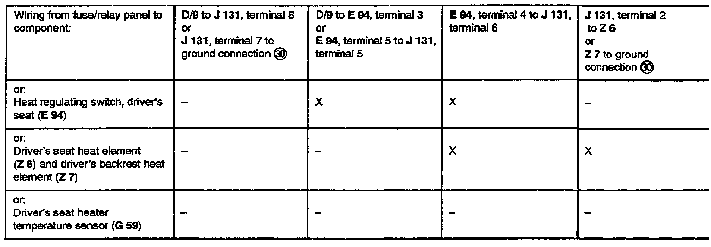

Checking Heated Driver Seat
Tools required:
- Tester VAG 1466
- Digital multimeter Fluke 83
Test conditions:
- Fuse No. 14 OK!
Troubleshooting preparations:
- Remove driver's seat heater control module (J 131), stamped with production control number 59, from relay socket under driver's seat.
- Insert test adapter VAG 1466/6 into relay socket under driver's seat.
- Connect VAG 1466 to test adaptor.
- Switch seat heating OFF.
Test procedure information:
- Perform test steps according to table.
- If specified value/test result is obtained, continue troubleshooting with next test step (test result OK).
- If specified value/test result is not obtained, locate and eliminate malfunction using table.
- Use valid wiring diagram for checking wiring.
- Remove all test wires from sockets of VAG 1466 after each test step.
IF MALFUNCTION HAS NOT BEEN ELIMINATED AFTER PERFORMING TEST STEPS 1 THROUGH 5, REPLACE DRIVER'S SEAT HEATER CONTROL MODULE (J131)!
After repairing malfunction, check seat heater for proper operation.
}��O:

Possible causes if specified value/test result is not obtained:
���O:
